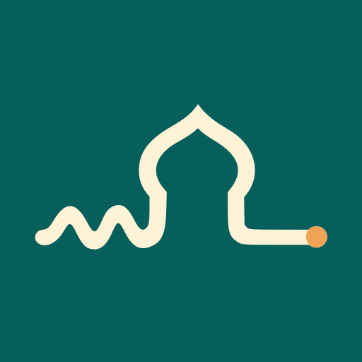
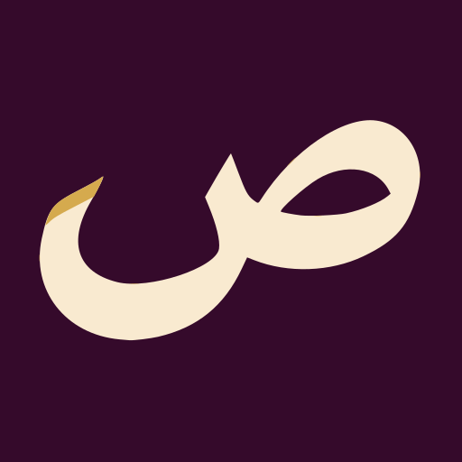
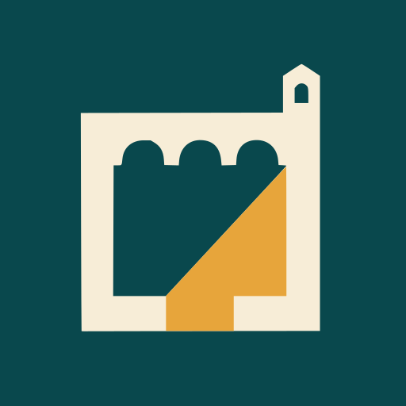
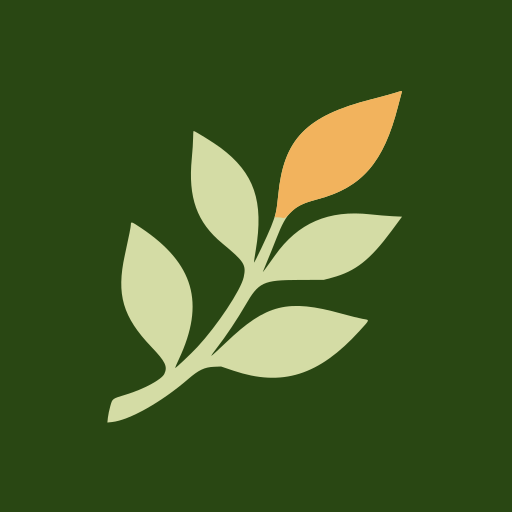
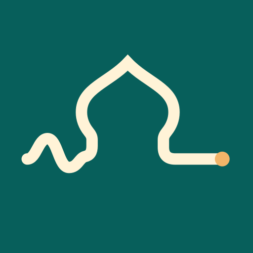
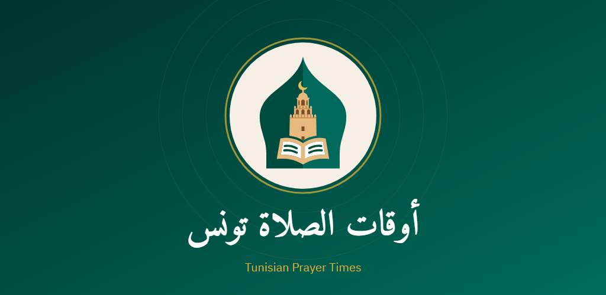
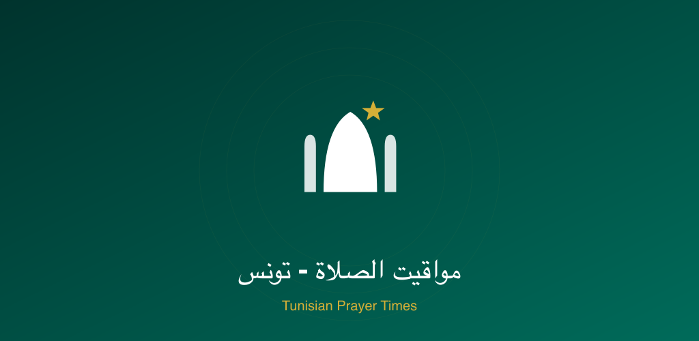

Logo review
435 logos and variants from the launcher proposals and design archive.
Round 9 12
Kairouan Shadow
A Kairouan minaret casts a long terracotta shadow. The tower gives the icon a place and its moving shadow suggests time.


 Woven Hour
Woven Hour
A turned corner shows the golden reverse of a prayer rug. Its stepped niche and broad fringe give the textile a recognizable outline.



Quiet Frequency
Two sound waves rise into a prayer arch and settle into a level line. The phone going quiet for prayer is legible in a single gesture.



Ṣād in Ink
One broad-nib ص, the opening letter of صلاة, carries the whole icon. The open counter holds its shape at small sizes.



Courtyard Light
A wedge of sunlight enters a mosque courtyard. Three arcade openings and a small corner tower give the plan its scale.


 Blue Hour Door
Blue Hour Door
Morning light falls through a half-open cobalt doorway. The paired leaves and brass studs recall Sidi Bou Said.


Night Folio
A crescent cuts into one page of an open Qur’an. The two broad leaves suggest night reading with very little detail.



Five Olive Leaves
Five leaves grow from one olive branch. The gold tip picks out the next prayer in the day.


 Phone at Rest
Phone at Rest
A phone lies face down at the foot of a prayer mat. Its camera dot and the woven niche show the app’s quiet mode through a familiar action.


Brass Hours
An ivory sighting rule picks out one of five stations on a brass quadrant. The instrument connects the sun’s movement with prayer time.


 Quiet Frequency · Low Sun
Quiet Frequency · Low Sun
A small amber sun sits low inside the original two-wave arch.



Quiet Frequency · Single Ripple
An earlier study with a single ripple leading into the prayer arch.


App identities 9
Android launcher
The phone app’s arch, Kairouan minaret, open Qur’an and mute badge. The compiled foreground identifies Round 3’s final teal design.



Google Play feature graphic
The current store lockup pairs the launcher with the Arabic and English app names.


Original Android launcher
White dome and two minarets on teal. The same early mark appears in the original design galleries.
Git snapshot cf6d51b2, before the November launcher change.



Original Google Play graphic
The earlier store banner pairs the original mosque art with the app wordmark.
Git snapshot cf6d51b2, before the November launcher change.


 Desktop installer icon
Desktop installer icon
The packaged desktop mark, supplied in PNG, Windows ICO and macOS ICNS formats.
Desktop window and tray
The desktop client draws this version with rounded minarets and a crescent constructed in Java2D.
Preview rendered by AppIcon.create(256).

Android TV launcher
A centered gold disc on the TV launcher’s dark teal field.

Android TV banner
A silver verse medallion and outlined Arabic wordmark on a dusk gradient.
Includes the earlier plain teal banner resource from Git e1cc1425.

Qaloon launcher
Its opaque white foreground color fills the adaptive icon. The green background is underneath.

First launcher studies 12


 Minaret on the Horizon
Minaret on the Horizon


 Bab (The Studded Door)
Bab (The Studded Door)


 The Lamp in the Niche
The Lamp in the Niche


Round 2 132


 Finger on lips (ط)
Finger on lips (ط)
Archived variation


 ص as Do Not Disturb
ص as Do Not Disturb
Archived variation


 Takbir hands as ⏸
Takbir hands as ⏸
Archived variation


 Waveform with a quiet gap
Waveform with a quiet gap
Archived variation


 Volume Rug · A Cross
Volume Rug · A Cross
Exploratory drawing


 Volume Rug · B Nowaves
Volume Rug · B Nowaves
Exploratory drawing


 Volume Rug · C Badge
Volume Rug · C Badge
Exploratory drawing


 Volume Rug · D Cross Plain
Volume Rug · D Cross Plain
Exploratory drawing


 Volume Rug · E Teeth
Volume Rug · E Teeth
Exploratory drawing


 Volume Rug · G Bands
Volume Rug · G Bands
Exploratory drawing


 Volume Rug · L Axis3 Big
Volume Rug · L Axis3 Big
Exploratory drawing


 Volume Rug · S Wool3
Volume Rug · S Wool3
Exploratory drawing


 Volume Rug · V1 Final
Volume Rug · V1 Final
Exploratory drawing


 Quiet Crescent · Blue Attached
Quiet Crescent · Blue Attached
Exploratory drawing


 Quiet Crescent · Blue Lozenge
Quiet Crescent · Blue Lozenge
Exploratory drawing


 Quiet Crescent · Blue Red
Quiet Crescent · Blue Red
Exploratory drawing


 Quiet Crescent · Day
Quiet Crescent · Day
Exploratory drawing


 Quiet Crescent · R1 Blue
Quiet Crescent · R1 Blue
Exploratory drawing · Preview assembled from the two source layers.


 Quiet Crescent · R1 Day
Quiet Crescent · R1 Day
Exploratory drawing · Preview assembled from the two source layers.


 Quiet Crescent · R1 Day 3T
Quiet Crescent · R1 Day 3T
Exploratory drawing · Preview assembled from the two source layers.


 Quiet Crescent · R1 Sujud
Quiet Crescent · R1 Sujud
Exploratory drawing · Preview assembled from the two source layers.


 Muted Rug · Blue Big Teeth
Muted Rug · Blue Big Teeth
Exploratory drawing · Preview assembled from the two source layers.


 Muted Rug · Blue Grad
Muted Rug · Blue Grad
Exploratory drawing · Preview assembled from the two source layers.


 Muted Rug · Blue Plain
Muted Rug · Blue Plain
Exploratory drawing · Preview assembled from the two source layers.


 Muted Rug · Blue Wide
Muted Rug · Blue Wide
Exploratory drawing · Preview assembled from the two source layers.


 Muted Rug · Blue Wide B12
Muted Rug · Blue Wide B12
Exploratory drawing · Preview assembled from the two source layers.


 Muted Rug · Blue Wide Saw
Muted Rug · Blue Wide Saw
Exploratory drawing · Preview assembled from the two source layers.


 Muted Rug · Blue Wsb
Muted Rug · Blue Wsb
Exploratory drawing · Preview assembled from the two source layers.


 Muted Rug · Blue X
Muted Rug · Blue X
Exploratory drawing · Preview assembled from the two source layers.

 Muted Rug · R1 Final
Muted Rug · R1 Final
Exploratory drawing


 Muted Rug · R2 Apart
Muted Rug · R2 Apart
Exploratory drawing


 Muted Rug · R2 Crescent
Muted Rug · R2 Crescent
Exploratory drawing


 Muted Rug · R2 Minus
Muted Rug · R2 Minus
Exploratory drawing


 Muted Rug · Teal Cream
Muted Rug · Teal Cream
Exploratory drawing


 Muted Rug · Teal Wsb
Muted Rug · Teal Wsb
Exploratory drawing · Preview assembled from the two source layers.


 Shhh · H Smooth Crescent
Shhh · H Smooth Crescent
Exploratory drawing


 Shhh · K Final Terracotta
Shhh · K Final Terracotta
Exploratory drawing


 Shhh · R1 Final
Shhh · R1 Final
Exploratory drawing


 Shhh · R2 C Finial Left
Shhh · R2 C Finial Left
Exploratory drawing


 Finger on lips (ط) · A Offset
Finger on lips (ط) · A Offset
Archived variation


 Finger on lips (ط) · K Centred
Finger on lips (ط) · K Centred
Archived variation


 Finger on lips (ط) · S Final Moon
Finger on lips (ط) · S Final Moon
Archived variation


 ص as Do Not Disturb · Contrast
ص as Do Not Disturb · Contrast
Archived variation


 ص as Do Not Disturb · Gold
ص as Do Not Disturb · Gold
Archived variation


 ص as Do Not Disturb · Navy
ص as Do Not Disturb · Navy
Archived variation


 ص as Do Not Disturb · Sbs
ص as Do Not Disturb · Sbs
Archived variation


 Takbir hands as ⏸ · A Protrude
Takbir hands as ⏸ · A Protrude
Archived variation


 Takbir hands as ⏸ · B Notch
Takbir hands as ⏸ · B Notch
Archived variation


 Takbir hands as ⏸ · B Notch Converge
Takbir hands as ⏸ · B Notch Converge
Archived variation


 Takbir hands as ⏸ · B Notch Madder
Takbir hands as ⏸ · B Notch Madder
Archived variation


 Takbir hands as ⏸ · C Cuff
Takbir hands as ⏸ · C Cuff
Archived variation


 Takbir hands as ⏸ · C Smile
Takbir hands as ⏸ · C Smile
Archived variation


 Takbir hands as ⏸ · C Smile Madder
Takbir hands as ⏸ · C Smile Madder
Archived variation


 Takbir hands as ⏸ · D Bleed
Takbir hands as ⏸ · D Bleed
Archived variation


 Takbir hands as ⏸ · D Bleed Madder
Takbir hands as ⏸ · D Bleed Madder
Archived variation


 Takbir hands as ⏸ · D Bleed Straight
Takbir hands as ⏸ · D Bleed Straight
Archived variation


 Takbir hands as ⏸ · E Refined
Takbir hands as ⏸ · E Refined
Archived variation


 Takbir hands as ⏸ · E Refined Glow
Takbir hands as ⏸ · E Refined Glow
Archived variation


 Takbir hands as ⏸ · F Beside Lean
Takbir hands as ⏸ · F Beside Lean
Archived variation


 Takbir hands as ⏸ · F Beside Low
Takbir hands as ⏸ · F Beside Low
Archived variation


 Takbir hands as ⏸ · G Shortv
Takbir hands as ⏸ · G Shortv
Archived variation


 Takbir hands as ⏸ · G Shortv Wide
Takbir hands as ⏸ · G Shortv Wide
Archived variation


 Takbir hands as ⏸ · H Bleed
Takbir hands as ⏸ · H Bleed
Archived variation


 Takbir hands as ⏸ · H Clip31
Takbir hands as ⏸ · H Clip31
Archived variation


 Takbir hands as ⏸ · H Clip33
Takbir hands as ⏸ · H Clip33
Archived variation


 Takbir hands as ⏸ · I Clip33 Olive2
Takbir hands as ⏸ · I Clip33 Olive2
Archived variation


 Takbir hands as ⏸ · I Lower
Takbir hands as ⏸ · I Lower
Archived variation


 Takbir hands as ⏸ · I Lower Madder
Takbir hands as ⏸ · I Lower Madder
Archived variation


 Takbir hands as ⏸ · I Lower Olive2
Takbir hands as ⏸ · I Lower Olive2
Archived variation


 Takbir hands as ⏸ · I Lower Redsleeve
Takbir hands as ⏸ · I Lower Redsleeve
Archived variation


 Waveform with a quiet gap · A Three Bars
Waveform with a quiet gap · A Three Bars
Archived variation


 Waveform with a quiet gap · B Two Bars
Waveform with a quiet gap · B Two Bars
Archived variation


 Waveform with a quiet gap · C Terracotta
Waveform with a quiet gap · C Terracotta
Archived variation


 Waveform with a quiet gap · D Dots Diamond
Waveform with a quiet gap · D Dots Diamond
Archived variation


 Waveform with a quiet gap · E Two Big
Waveform with a quiet gap · E Two Big
Archived variation


 Waveform with a quiet gap · F Two Asym
Waveform with a quiet gap · F Two Asym
Archived variation


 Waveform with a quiet gap · G Three Big
Waveform with a quiet gap · G Three Big
Archived variation


 Waveform with a quiet gap · H Fit Wave
Waveform with a quiet gap · H Fit Wave
Archived variation


 Waveform with a quiet gap · I Fit Ramp
Waveform with a quiet gap · I Fit Ramp
Archived variation


 Waveform with a quiet gap · J Fit Wave Deepfringe
Waveform with a quiet gap · J Fit Wave Deepfringe
Archived variation


 Waveform with a quiet gap · K Fit Wave Tanfringe
Waveform with a quiet gap · K Fit Wave Tanfringe
Archived variation


 Waveform with a quiet gap · N Two Wide
Waveform with a quiet gap · N Two Wide
Archived variation


 Waveform with a quiet gap · O Three Wide
Waveform with a quiet gap · O Three Wide
Archived variation


 Waveform with a quiet gap · P Three Wide Asym
Waveform with a quiet gap · P Three Wide Asym
Archived variation


 Waveform with a quiet gap · Q Pointed Open
Waveform with a quiet gap · Q Pointed Open
Archived variation


 Waveform with a quiet gap · R Pointed Closed
Waveform with a quiet gap · R Pointed Closed
Archived variation


 Waveform with a quiet gap · R1 Final
Waveform with a quiet gap · R1 Final
Archived variation


 Waveform with a quiet gap · R2A One Dot
Waveform with a quiet gap · R2A One Dot
Archived variation


 Waveform with a quiet gap · R2B Two Dots
Waveform with a quiet gap · R2B Two Dots
Archived variation


 Waveform with a quiet gap · R2C Flat Line
Waveform with a quiet gap · R2C Flat Line
Archived variation


 Waveform with a quiet gap · R2D Pitch Dot
Waveform with a quiet gap · R2D Pitch Dot
Archived variation


 Waveform with a quiet gap · R2E Hump 2Dots
Waveform with a quiet gap · R2E Hump 2Dots
Archived variation


 Waveform with a quiet gap · R2F Hump Asym
Waveform with a quiet gap · R2F Hump Asym
Archived variation


 Waveform with a quiet gap · R2G V Bigrug
Waveform with a quiet gap · R2G V Bigrug
Archived variation


 Waveform with a quiet gap · R2H Hump 1Dot
Waveform with a quiet gap · R2H Hump 1Dot
Archived variation


 Waveform with a quiet gap · R3A Tall 2Dots
Waveform with a quiet gap · R3A Tall 2Dots
Archived variation


 Waveform with a quiet gap · R3B Tall Dash
Waveform with a quiet gap · R3B Tall Dash
Archived variation


 Waveform with a quiet gap · R3C Tall 1Dot
Waveform with a quiet gap · R3C Tall 1Dot
Archived variation


 Waveform with a quiet gap · R4A Decrescendo
Waveform with a quiet gap · R4A Decrescendo
Archived variation


 Waveform with a quiet gap · R4B Decrescendo Asym
Waveform with a quiet gap · R4B Decrescendo Asym
Archived variation


 Waveform with a quiet gap · R4C Decrescendo Tallrug
Waveform with a quiet gap · R4C Decrescendo Tallrug
Archived variation


 Waveform with a quiet gap · R5A Shortrug
Waveform with a quiet gap · R5A Shortrug
Archived variation


 Waveform with a quiet gap · R5B Fading Dots
Waveform with a quiet gap · R5B Fading Dots
Archived variation


 Waveform with a quiet gap · R5C Wide Rug
Waveform with a quiet gap · R5C Wide Rug
Archived variation


 Waveform with a quiet gap · R6A Fine Fringe
Waveform with a quiet gap · R6A Fine Fringe
Archived variation


 Waveform with a quiet gap · R6B Fine Fringe Frame
Waveform with a quiet gap · R6B Fine Fringe Frame
Archived variation


 Waveform with a quiet gap · S Pointed Solid
Waveform with a quiet gap · S Pointed Solid
Archived variation


 Waveform with a quiet gap · T Pointed Open Grad
Waveform with a quiet gap · T Pointed Open Grad
Archived variation


 Waveform with a quiet gap · U Bold Bars
Waveform with a quiet gap · U Bold Bars
Archived variation


 Waveform with a quiet gap · V Bold Bars Big Rug
Waveform with a quiet gap · V Bold Bars Big Rug
Archived variation


 Waveform with a quiet gap · W Taller
Waveform with a quiet gap · W Taller
Archived variation


Round 3 15


 Arch Cream Plain
Arch Cream Plain


 Kairouan Silent Cream
Kairouan Silent Cream


 Kairouan Silent Blue
Kairouan Silent Blue


 Owner Refined
Owner Refined
Preview assembled from the two source layers.


 Final Teal
Final Teal
Source drawing for the current Android launcher.


Round 4 10
Bab Minaret Teal


Bab Minaret Cream


Arch Mushaf Teal


Arch Mushaf Cream


Bab Minaret Silent Teal


Bab Minaret Silent Cream


Arch Mushaf Silent Teal


Arch Mushaf Silent Cream


Round 5 3


Round 6 3
Minaret Through the Arch
Launcher crop and original image study.


Sidi Bou Said Door
Launcher crop and original image study.


Round 7 15
Final Cream


Final Teal


Round 8 14
Courtyard Wall


Prayer Window studies 210
 Prayer Window
Prayer Window
A prayer arch and a small sunrise. Familiar, quiet, and directly connected to prayer.
Gallery entry 01

 Five Moments
Five Moments
Five bold intervals around one day. One light segment marks a moment of attention.
Gallery entry 02
 Open Sky
Open Sky
An open book becomes a pair of wings. A wider identity for prayer, Quran, and learning.
Gallery entry 03
 Courtyard
Courtyard
A woven tile around a quiet center. Architectural character, without a building silhouette.
Gallery entry 04
 Olive Shelter
Olive Shelter
An asymmetric olive sprig with a warm seed. Soft, earthy, and deliberately unexpected.
Gallery entry 05
 Prayer Beads
Prayer Beads
A bold loop of beads with a small tassel. A personal devotional object becomes the identity.
Gallery entry 06
 Qibla Fold
Qibla Fold
A compass needle folded like paper. Precise, energetic, and strongly directional.
Gallery entry 07
 Tunis Taa
Tunis Taa
A custom geometric ت, from تونس. A bold Arabic monogram with no pictorial religious symbol.
Gallery entry 08
 Quiet Time
Quiet Time
A clock opens into a pause. A bright, modern identity for an app that protects prayer time.
Gallery entry 09
 Dayline
Dayline
Five appointments on one confident rising line. The next prayer comes forward in electric citron.
Gallery entry 10
 Reading Hour
Reading Hour
A folded bookmark with time at its heart. Quran reading and daily reminders share one compact symbol.
Gallery entry 11
 Dhikr Loop
Dhikr Loop
An open, asymmetric ribbon and a single counting marker. A bold identity for daily remembrance.
Gallery entry 12
 Dawn Switch
Dawn Switch
A wake switch becomes a rising sun, connecting automation to the start of the prayer day.
Gallery entry 13
 Verse Steps
Verse Steps
One continuous stepped ribbon and a next-passage marker turn Quran memorization into a compact modern identity.
Gallery entry 14
 Sakina
Sakina
A dove settles into a broad protective wing. Soft blue and ivory turn the logo into a small moment of peace.
Gallery entry 15
 Jannah Garden
Jannah Garden
A flourishing canopy rises over a flowing spring. A garden-inspired identity for hope, renewal, and peaceful devotion.
Gallery entry 16
 Sanctuary
Sanctuary
A warm prayer place held within two protective walls. An intimate space for stillness, drawn as a sculptural sign.
Gallery entry 17
 Dawn Thread
Dawn Thread
A flowing folded stroke gives the prayer day a continuous, distinctive signature.
Gallery entry 18
 Blue Manuscript
Blue Manuscript
A golden manuscript medallion becomes a confident, compact identity for Quran and remembrance.
Gallery entry 19
 Common Ground
Common Ground
Two folded prayer rows and two points of light form a bold, welcoming geometric signature.
Gallery entry 20
 Fivefold
Fivefold
Five folded facets gather around a shared center. A compact geometric emblem for a day shaped by prayer.
Gallery entry 21
 Miim
Miim
A custom geometric م, the first letter of مواقيت. Arabic identity becomes the entire symbol.
Gallery entry 22
 Light Lens
Light Lens
Two unequal fields of light, cut by a clear diagonal horizon. A striking identity for the changing prayer day.
Gallery entry 23
 Lantern Fold
Lantern Fold
A lantern reduced to a folded jewel, with a small light held inside.
Gallery entry 24
 Sakina Hilal
Sakina Hilal
The Sakina dove rests within one generous crescent. The Islamic cue becomes the shelter itself.
Gallery entry 25
 Sakina Mihrab
Sakina Mihrab
The original dove inhabits a broad prayer niche. The architecture gives its calm a clear devotional setting.
Gallery entry 26
 Sakina Khatam
Sakina Khatam
An eight-point geometric seal holds the Sakina dove in negative space. Its warm wing remains a separate accent.
Gallery entry 27
 Jannah Mihrab
Jannah Mihrab
A living garden and spring sit within a pointed prayer niche, making the devotional connection immediate.
Gallery entry 28
 Jannah Courtyard
Jannah Courtyard
An eight-point Islamic courtyard frame holds the original flourishing garden and its spring.
Gallery entry 29
 Jannah Hilal
Jannah Hilal
A generous crescent cradles a flourishing garden, with a spring flowing through its open side.
Gallery entry 30
 Sakina Salah
Sakina Salah
Sakina's dove carries prayer in its wing: a folded prayer rug becomes part of the bird itself.
Gallery entry 31
 Sakina Quiet Joy
Sakina Quiet Joy
A soft jade curve holds a warm golden circle in an open, gently uplifting composition.
Gallery entry 32
 Quiet Joy Mihrab
Quiet Joy Mihrab
Quiet Joy's soft embrace rises into a generous prayer niche, holding the warm golden circle within an open, peaceful space.
Gallery entry 33
 Quiet Joy Dua
Quiet Joy Dua
Quiet Joy's welcoming curve becomes two gently cupped palms, holding an open space for dua and a touch of warmth.
Gallery entry 34
 Quiet Joy Sajjada
Quiet Joy Sajjada
A softly curved prayer rug shelters a small warm light, carrying Quiet Joy into a place for salah.
Gallery entry 35
 Interval
Interval
A sculpted hourglass gives the app a calm, confident identity built around the passage of time.
Gallery entry 36
 Lightwell
Lightwell
Two offset planes suggest a sheltered opening and a broad pool of light. Warm clay gives the mark a grounded, welcoming character.
Gallery entry 37
 Bayt
Bayt
A compact Kaaba silhouette with a generous gold band and a calm, balanced presence.
Gallery entry 38
 Waqt Waw
Waqt Waw
A bold Arabic و, the opening letter of وقت, with a warm flowing tail.
Gallery entry 39
 Rehal
Rehal
An open Quran rests on a simple folding stand. Ivory pages and warm copper wood create a calm, grounded mark.
Gallery entry 40
 Weave
Weave
Two broad textile-like bands alternate over and under one another in a compact woven mark.
Gallery entry 41
 Qibla Route
Qibla Route
A single open route surrounds one gold square, gathering the identity around a shared destination.
Gallery entry 42
 Safa
Safa
A single fluid drop opens around a soft wave, suggesting clarity, stillness, and renewal.
Gallery entry 43
 Tawaf
Tawaf
A broad flowing orbit gathers around a clear Kaaba center, expressing direction, devotion, and continuity.
Gallery entry 44
 Adhan
Adhan
A grounded mosque dome sends a clear call outward through two generous sound strokes.
Gallery entry 45
 Manara
Manara
A square minaret rises from warm stone: a copper shaft, a blue stepped crown, and one quiet opening.
Gallery entry 46
 Saff
Saff
Three prayer rugs form one peaceful row, with a warm central rug and open prayer niches.
Gallery entry 47
 Mushaf
Mushaf
A closed Quran volume with a geometric cover medallion and a visible gilded page edge.
Gallery entry 48
 Hilal Seal
Hilal Seal
An asymmetric crescent embraces a bold eight-point star, bringing lunar time and Islamic ornament into one luminous mark.
Gallery entry 49
 Quiet Masjid
Quiet Masjid
A generous mosque dome and a single slender minaret create a calm, welcoming place for prayer.
Gallery entry 50
 Twin Minarets
Twin Minarets
A sculptural central dome is held in balance by two rose-colored minarets.
Gallery entry 51
 Medina Steps
Medina Steps
A stepped square minaret joins a quiet prayer hall, with open arches cut through warm ivory walls.
Gallery entry 52
 Moonlit Masjid
Moonlit Masjid
A generous crescent holds a mosque, pairing a quiet night sky with a clear place of prayer.
Gallery entry 53
 Dawn Mosque
Dawn Mosque
A warm sunrise behind an ivory mosque brings a sense of hope and a fresh beginning.
Gallery entry 54
 Courtyard Mosque
Courtyard Mosque
A domed hall and square minaret rise from a compact open courtyard, viewed at a gentle angle.
Gallery entry 55
 Folded Masjid
Folded Masjid
An angular dome and a slender minaret turn a mosque into a small architectural sculpture.
Gallery entry 56
 Mosaic Mosque
Mosaic Mosque
A mosque is cut into a broad eight-point tile, with one warm entrance at its center.
Gallery entry 57
 Reflecting Mosque
Reflecting Mosque
A mosque rests above two quiet reflections, pairing prayer with a feeling of stillness.
Gallery entry 58
 Ribbon Masjid
Ribbon Masjid
One broad architectural ribbon joins a minaret, dome, and open entrance in a warm contemporary mark.
Gallery entry 59
 Ink Masjid
Ink Masjid
A flowing ink silhouette gathers into a mosque dome, with a warm tapering minaret beside it.
Gallery entry 60
 Spiral Minaret
Spiral Minaret
Three curved tiers rise beside a low domed prayer hall, giving the mosque a distinctive sculptural rhythm.
Gallery entry 61
 Ottoman Cascade
Ottoman Cascade
A central dome descends through two half-domes into a broad prayer hall, framed by slim minarets.
Gallery entry 62
 Tiered Roof
Tiered Roof
Three pitched roof tiers rise above an open prayer hall beside a crescent-topped minaret.
Gallery entry 63
 Sail Masjid
Sail Masjid
A single sail-shaped shell lifts above a broad open prayer hall, balanced by a clear slender minaret.
Gallery entry 64
 Block Masjid
Block Masjid
A stepped dome, square entrance, and tiered minaret build a mosque from bold grid-aligned shapes.
Gallery entry 65
 Mosque Seal
Mosque Seal
A mosque is cut into a broad circular seal, with an open edge and a warm carved accent.
Gallery entry 66
 Portal Masjid
Portal Masjid
A complete mosque appears through a tall pointed gateway, turning an architectural frame into an invitation to prayer.
Gallery entry 67
 Lantern Mosque
Lantern Mosque
A mosque-shaped opening glows within a bold angular lantern, bringing prayer and guidance into one silhouette.
Gallery entry 68
 Dune Mosque
Dune Mosque
A substantial mosque rises from one sweeping dune, joining grounded architecture with a soft, flowing landscape.
Gallery entry 69
 Prism Masjid
Prism Masjid
A solid mosque volume turns in space, with a faceted dome, deep entrance, and substantial tower rising behind it.
Gallery entry 70
 Monogram Masjid
Monogram Masjid
A bold lowercase m becomes a mosque: two generous arches form the letter, while a taller first stem rises as a minaret.
Gallery entry 71
 Deco Masjid
Deco Masjid
Five broad fan ribs rise over a pierced prayer hall, creating an architectural mosque with an Art Deco rhythm.
Gallery entry 72
 Soft Dome
Soft Dome
A pillowy mosque dome and a plump minaret with a rounded balcony turn sacred architecture into a warm, cheerful silhouette.
Gallery entry 73
 Stencil Masjid
Stencil Masjid
A mosque is cut boldly through an asymmetric stepped stencil, with a chalk-white registration block above.
Gallery entry 74
 Constellation Mosque
Constellation Mosque
A mosque emerges from a few connected points and bold straight lines, like a quiet map drawn in the night sky.
Gallery entry 75
 Floorplan Mosque
Floorplan Mosque
A mosque seen from above becomes an open courtyard, a prayer hall with a recessed mihrab, and a corner minaret footprint.
Gallery entry 76
 Linocut Masjid
Linocut Masjid
A chunky, hand-carved mosque pairs irregular black architecture with an acid-olive minaret on warm paper.
Gallery entry 77
 Skyline Masjid
Skyline Masjid
Two prayer halls and unequal minarets interlock into one long, low mosque panorama.
Gallery entry 78
 Bauhaus Mosque
Bauhaus Mosque
An oversized half-disc, a thick rectangular minaret, and an open doorway form an asymmetric modernist mosque.
Gallery entry 79
 Noor Arch
Noor Arch
A single ivory mosque silhouette joins a flowing dome, open doorway, and slender brass-capped minaret.
Gallery entry 80
 Safa Line
Safa Line
One continuous architectural contour joins a centered dome, twin minarets, and an open doorway.
Gallery entry 81
 Sakinah Courtyard
Sakinah Courtyard
A sage courtyard mosque with aligned open arcades and a warm sun balancing its minaret.
Gallery entry 82
 Rahma Dome
Rahma Dome
A centered ivory dome and warm twin minarets form one mosque, crowned by an attached crescent.
Gallery entry 83
 Zellij Masjid
Zellij Masjid
A unified ivory mosque sits within an evenly spaced, scalloped gold frame.
Gallery entry 84
 Heritage Medallion
Heritage Medallion
Three joined domes and twin minarets sit inside a balanced circular medallion with integrated scrollwork.
Gallery entry 85
 Serene Masjid
Serene Masjid
A warm brass dome rises between two slender minarets, with one generous open doorway.
Gallery entry 86
 Daybreak Masjid
Daybreak Masjid
A pearl mosque rests beneath a generous rising sun, suggesting the calm start of a prayer day.
Gallery entry 87
 Stillwater Masjid
Stillwater Masjid
A single-minaret mosque rests above one softly flowing waterline.
Gallery entry 88
 Gentle Masjid
Gentle Masjid
A welcoming mosque with a generous warm dome and two balanced, softly pointed towers.
Gallery entry 89
 Dawn Embrace
Dawn Embrace
A low mosque sits inside a broad rising-sun halo, held by one shared axis.
Gallery entry 90
 Reflecting Masjid
Reflecting Masjid
A compact mosque meets one soft water band, suggesting a quiet reflecting courtyard.
Gallery entry 91
 Sultan Mosque
Sultan Mosque
One generous dome, two slender minarets, and one open doorway form a single grounded mosque.
Gallery entry 92
 Dhikr Court
Dhikr Court
A connected mosque settles within one generous U-shaped string of prayer beads.
Gallery entry 93
 Quran Sanctuary
Quran Sanctuary
A classical mosque rises directly from the open pages of a Quran.
Gallery entry 94
 Solid Masjid
Solid Masjid
A bold ivory mosque grows from one clean foundation, with a warm cap on its slender minaret.
Gallery entry 95
 Dawn Portal
Dawn Portal
A rising sun sits within the open doorway of a bold, symmetric mosque.
Gallery entry 96
 Pages of Prayer
Pages of Prayer
An open Quran forms the foundation of a symmetric mosque, joining learning and prayer in one compact mark.
Gallery entry 97
 Maghrib Arcade
Maghrib Arcade
A stepped square minaret grows from the same foundation as a low domed prayer hall and three open arches.
Gallery entry 98
 Riwaq Water
Riwaq Water
A compact mosque meets a single broad water ribbon at its foundation, recalling the stillness of an ablution courtyard.
Gallery entry 99
 Open Way
Open Way
A generous mosque doorway opens onto a warm path, with a square minaret balancing the domed hall.
Gallery entry 100
 Silk Masjid
Silk Masjid
A continuous architectural contour joins one slender minaret to a flowing dome and a warm doorway.
Gallery entry 101
 Waterline Masjid
Waterline Masjid
A mosque with one slender minaret and a broad rounded dome rests above a single unhurried water curve.
Gallery entry 102
 Recitation Masjid
Recitation Masjid
An open Quran forms the actual foundation of a mosque, with its gutter aligned directly beneath the doorway.
Gallery entry 103
 Facet Masjid
Facet Masjid
An ivory mosque is carved into one connected silhouette, with a warm side facet and two balanced towers.
Gallery entry 104
 Dawn Court
Dawn Court
A compact sculpted mosque sits beneath one centered dawn sun, bringing the prayer day into the identity.
Gallery entry 105
 Water Court
Water Court
A single-tower mosque rests above one broad water ribbon, evoking the stillness of a courtyard pool.
Gallery entry 106
 Twin Minaret Masjid
Twin Minaret Masjid
A broad, quiet mosque joins a flowing central dome, twin minarets, and one generous doorway.
Gallery entry 107
 Prayer Hour Masjid
Prayer Hour Masjid
A prayer-time clock sits on the axis of the dome and doorway, giving a calm mosque a functional heart.
Gallery entry 108
 Olive Court Masjid
Olive Court Masjid
A mosque and an olive branch grow from one foundation, balancing a slender minaret with a quiet living curve.
Gallery entry 109
 Swept Masjid
Swept Masjid
A low, flowing prayer hall and a sculpted minaret form one sweeping mosque silhouette.
Gallery entry 110
 Hilal Spire
Hilal Spire
A tall curved minaret rises from a small prayer hall, held by one sweeping crescent.
Gallery entry 111
 Qibla Canopy
Qibla Canopy
A continuous open contour traces a sweeping mosque dome, one minaret, and a lower side wing, with a direction needle inside the entrance.
Gallery entry 112
 Adobe Court
Adobe Court
A broad earthen prayer court meets a single stepped square minaret, with an open arched entrance.
Gallery entry 113
 Prayer Terrace
Prayer Terrace
A slender square minaret rises from a low prayer hall anchored directly into a woven prayer rug.
Gallery entry 114
 Qibla Courtyard
Qibla Courtyard
A terraced mosque courtyard turns into a compact axonometric mark, with a Qibla marker held inside its open court.
Gallery entry 115
 Arcade Masjid
Arcade Masjid
Five open prayer-hall arches and one square Maghrebi tower form a broad, grounded mosque.
Gallery entry 116
 Cascading Masjid
Cascading Masjid
A tall single minaret, a broad rounded dome, and a lower side dome create a descending architectural rhythm.
Gallery entry 117
 Hilal Portal
Hilal Portal
A stepped monumental mosque portal and two low prayer halls share one foundation, with a crescent above the central entry.
Gallery entry 118
 Arc & Tower
Arc & Tower
A broad semicircular prayer hall meets one straight square minaret, giving the mosque a low, asymmetric profile.
Gallery entry 119
 Crescent Refuge
Crescent Refuge
A large crescent shelters a compact, off-center mosque, producing an open circular silhouette.
Gallery entry 120
 Rosette Court
Rosette Court
A flat-roof mosque facade and square minaret surround a large eight-point star window.
Gallery entry 121
 Tiered Canopy
Tiered Canopy
Three broad roof tiers shelter a prayer hall beside a tapered minaret.
Gallery entry 122
 The Hour Minaret
The Hour Minaret
A tall lantern minaret rises above a low, straight-roofed prayer hall, with a clock set directly into its shaft.
Gallery entry 123
 Sailroof Seal
Sailroof Seal
A sweeping prayer-hall roof rises in one long curve beside a slender minaret, with an eight-point seal inset into the roof.
Gallery entry 124
 Atlas Arcade
Atlas Arcade
Three repeated geometric arches organize a broad Maghrebi mosque beneath a stepped cornice and one square minaret.
Gallery entry 125
 Qibla Tower
Qibla Tower
A tall mosque rises through measured setbacks into a compact compass-needle cap.
Gallery entry 126
 Adhan Facets
Adhan Facets
A sharply faceted mosque is balanced by two measured outward call strokes.
Gallery entry 127
 Riwaq Court
Riwaq Court
A square minaret rises from the exact meeting point of two deep prayer-hall wings, leaving an open courtyard.
Gallery entry 128
 Prayer Forecourt
Prayer Forecourt
A tall corner minaret anchors a compact hall, while a prayer rug extends naturally from its open doorway.
Gallery entry 129
 Mosaic Court
Mosaic Court
An enclosing courtyard mosque wraps around a single eight-point star set into its raised court.
Gallery entry 130
 Carved Minaret
Carved Minaret
A tall square minaret rises from a broad prayer hall with a large carved horseshoe portal.
Gallery entry 131
 Lantern Sanctuary
Lantern Sanctuary
A broad architectural lantern surrounds a compact mosque, sharing its lower sill as one integrated foundation.
Gallery entry 132
 Khatam Masjid
Khatam Masjid
A compact mosque sits within a broad eight-point seal, combining Islamic geometry with a clear architectural center.
Gallery entry 133
 Portico Rhythm
Portico Rhythm
A stepped square minaret and a broad horseshoe entrance are drawn as one substantial contour.
Gallery entry 134
 Dhikr Pavilion
Dhikr Pavilion
An open mosque pavilion holds a circular strand of prayer beads, with its tail passing through the entrance.
Gallery entry 135
 Resonant Minaret
Resonant Minaret
A tall minaret and small prayer hall share one line, accompanied by two generous adhan arcs.
Gallery entry 136
 Carved Ogee Masjid
Carved Ogee Masjid
A substantial ogee prayer vault rises between one grounded minaret and a short side buttress, opening around a generous carved entrance.
Gallery entry 137
 Mooncut Masjid
Mooncut Masjid
A rounded mosque carries a crescent cut directly into its broad dome, balanced by one attached minaret.
Gallery entry 138
 Hours Arcade
Hours Arcade
A low mosque with three broad vaults holds a clock inside its central facade, connecting architecture to prayer time.
Gallery entry 139
 White Court
White Court
A broad rounded prayer hall and one slim square minaret form a calm whitewashed courtyard mosque.
Gallery entry 140
 Lantern Riwaq
Lantern Riwaq
A square central minaret rises from two low horseshoe arcades, with a lantern suspended in its tall central opening.
Gallery entry 141
 Palm Sahn
Palm Sahn
A scalloped prayer hall and square minaret open onto a low courtyard wall where one date palm grows.
Gallery entry 142
 Sukun Masjid
Sukun Masjid
A rounded dome and two short, capped minarets form a broad, gentle mosque silhouette.
Gallery entry 143
 Reading Pavilion
Reading Pavilion
An open Quran rests inside the large arch of a soft, asymmetric mosque pavilion.
Gallery entry 144
 Spring Sanctuary
Spring Sanctuary
A water-drop contour shelters a compact mosque, joining renewal with prayer.
Gallery entry 145
 Spiral Sanctuary
Spiral Sanctuary
A sculptural spiral minaret rises beside a low prayer hall, with one continuous warm ramp wrapping its surface.
Gallery entry 146
 Dhikr Terrace
Dhikr Terrace
A broad prayer arcade and tapered side minaret rest inside the gentle embrace of a prayer-bead strand.
Gallery entry 147
 Palm Court
Palm Court
A compact terraced minaret and prayer hall are balanced by one sweeping palm frond rooted in their foundation.
Gallery entry 148
 Loom Dome
Loom Dome
A broad mosque dome is shaped as a strong architectural loop above a continuous woven-looking cornice and one slender minaret.
Gallery entry 149
 Saff Loom
Saff Loom
Two broad offset arches interlock: the mosque rib crosses a warm prayer-rug frame that continues to the ground.
Gallery entry 150
 Hour Weave
Hour Weave
A rounded mosque hall becomes a large time ring, interlocking with a narrow square minaret.
Gallery entry 151
 Folded Sanctuary
Folded Sanctuary
A broad cut-paper dome meets a stepped square minaret, with a deep horseshoe doorway and one folded corner.
Gallery entry 152
 Lantern Iwan
Lantern Iwan
A tall mosque portal shelters a hanging lantern, with a stepped minaret joined at its right.
Gallery entry 153
 Moon Canopy
Moon Canopy
A low courtyard mosque nestles beneath a broad paper crescent that turns into its right-hand silhouette.
Gallery entry 154
 Noor Gallery
Noor Gallery
A low broad prayer hall gathers warm light through a curved clerestory, beside a substantial left minaret.
Gallery entry 155
 Threshold of Prayer
Threshold of Prayer
A tall mosque gateway opens directly onto a broad prayer rug, joining the building and the act of prayer on one axis.
Gallery entry 156
 Sanctuary Key
Sanctuary Key
A mosque forms the bow of a bold key, with its open doorway aligned to the key shaft.
Gallery entry 157
 Civic Masjid
Civic Masjid
A broad semicircular dome and square minaret become one bold, cut-paper mosque.
Gallery entry 158
 Solar Stencil
Solar Stencil
A mosque appears as open space cut through a notched solar disc, with a warm entrance at its centre.
Gallery entry 159
 Oblique Saff
Oblique Saff
An upright mosque rises from a diagonal prayer rug, with a crisp coral edge and joined fringe.
Gallery entry 160
 Folded Iwan
Folded Iwan
A broad pointed hall turns into a single folded minaret, drawn as one architectural ribbon.
Gallery entry 161
 Sunfold Minaret
Sunfold Minaret
A tall diagonal minaret folds into a compact mosque, while a rising sun fills its opening.
Gallery entry 162
 Folded Prayer Court
Folded Prayer Court
A compact asymmetrical mosque rises directly from a broad, folded prayer rug.
Gallery entry 163
 Scalloped Riwaq
Scalloped Riwaq
A broad, scalloped mosque with a large horseshoe entrance and one integrated stepped minaret.
Gallery entry 164
 Lantern Masjid
Lantern Masjid
A tall carved minaret anchors a low domed hall, whose doorway opens into a coral beam of light.
Gallery entry 165
 Rosette Masjid
Rosette Masjid
A sculpted, stepped mosque with a carved four-lobed rose window and short flanking minarets.
Gallery entry 166
 Ink Pavilion
Ink Pavilion
A sweeping ink dome gathers into one tapered minaret and a curved foundation.
Gallery entry 167
 Tide Masjid
Tide Masjid
A low mosque and a rising minaret are carried by one continuous sweep of water.
Gallery entry 168
 Sunlit Iwan
Sunlit Iwan
A luminous sun rises from the threshold of a tall, open mosque drawn in tapered ink curves.
Gallery entry 169
 Oblique Masjid
Oblique Masjid
A mosque seen on the diagonal, with a folded roof and one attached square minaret.
Gallery entry 170
 Approach Masjid
Approach Masjid
A low mosque arcade and one square minaret open onto a broad, diagonal approach.
Gallery entry 171
 Tidal Masjid
Tidal Masjid
A tall stepped mosque rises directly from a flowing blue waterline, balanced around one central axis.
Gallery entry 172
 Chromatic Masjid
Chromatic Masjid
A cobalt prayer hall, a square minaret, and a vermilion half-dome form one bold architectural mark.
Gallery entry 173
 Pageform Masjid
Pageform Masjid
Two curved Quran pages become the foundation of a broad twin-minaret mosque, with one shared central fold and entrance.
Gallery entry 174
 Hourwall Masjid
Hourwall Masjid
A large clock face becomes the curved left wall of a tall mosque, balanced by a single square minaret.
Gallery entry 175
 Tilework Masjid
Tilework Masjid
A broad mosque built from bold cobalt steps, paired minarets, and amber ceramic blocks.
Gallery entry 176
 Wayfinder Tiles
Wayfinder Tiles
A tall stepped minaret leads into a tiled mosque, with a path bending out through its central doorway.
Gallery entry 177
 Pool Mosaic
Pool Mosaic
An ivory mosque locks into a cyan stepped pool, making a compact ceramic emblem.
Gallery entry 178
 Riwaq Lines
Riwaq Lines
A broad, open arcade and one square minaret turn the mosque into a precise architectural drawing.
Gallery entry 179
 Approach Pavilion
Approach Pavilion
An oblique barrel-vault mosque opens onto a path that continues directly from its doorway.
Gallery entry 180
 Dhikr Rotunda
Dhikr Rotunda
A prayer-bead arc becomes the dome of a rounded mosque with a small square minaret.
Gallery entry 181
 Arcade Moderne
Arcade Moderne
A broad mosque is built from nested arches and symmetrical stepped minarets.
Gallery entry 182
 Marked Riwaq
Marked Riwaq
An oblique mosque rests beside a minaret that continues into a bold Quran bookmark.
Gallery entry 183
 Fivefold Riwaq
Fivefold Riwaq
Five luminous openings step through a wide sanctuary under a terraced roof and one square minaret.
Gallery entry 184
 Threefold Sanctuary
Threefold Sanctuary
Three generous prayer portals are carved from a single low, sweeping mosque vault.
Gallery entry 185
 Prayer Circuit
Prayer Circuit
A mosque is carved into a circular time cycle, with a broad progress sweep around its outer edge.
Gallery entry 186
 Carved Quran Court
Carved Quran Court
An oblique mosque courtyard rises from the two sculpted leaves of an open Quran.
Gallery entry 187
 Terrace Sahn
Terrace Sahn
A domed prayer hall rises behind a deep diamond courtyard, resting on a single raised terrace.
Gallery entry 188
 Fivefold Sahn
Fivefold Sahn
Five colored bays follow a rounded courtyard wall, expressing the five daily prayers around a common sanctuary.
Gallery entry 189
 Reflecting Iwan
Reflecting Iwan
An open oblique court gathers around a quiet reflecting pool, with a tall mosque portal at the far corner.
Gallery entry 190
 Ogee Court
Ogee Court
A broad arcade gathers beneath an ogee dome, with a rounded minaret woven into its right wall.
Gallery entry 191
 Qibla Arabesque
Qibla Arabesque
A mosque opens into an ascending directional curl, joining prayer and the journey toward Mecca.
Gallery entry 192
 Folio Riwaq
Folio Riwaq
Two curling Quran leaves become the wide, open foundation of an ogee mosque.
Gallery entry 193
 Carved Masjid
Carved Masjid
A compressed mosque mass with a monumental pointed entrance and a square minaret cut into its left shoulder.
Gallery entry 194
 Compass Court
Compass Court
A thick mosque courtyard, seen from above, holds a directional pointer within its open center.
Gallery entry 195
 Sabr Portal
Sabr Portal
A tall terraced mosque entrance shelters an hourglass on its own foundation.
Gallery entry 196
 Rotunda Masjid
Rotunda Masjid
A domed circular prayer hall is viewed at an angle, with a curved terracotta side wall and a rounded rear minaret.
Gallery entry 197
 Resonant Masjid
Resonant Masjid
Three concentric sound arcs become the structural ribs of an open mosque dome, grounded by a prayer hall and one minaret.
Gallery entry 198
 Dhikr Orbit
Dhikr Orbit
A wide dhikr loop grows from the mosque’s walls, forming an open curved foundation with a bold rhythm of rounded beads.
Gallery entry 199
 Carved Courtyard
Carved Courtyard
A domed mosque seen at an angle, with a substantial square minaret and a terracotta side wall.
Gallery entry 200
 Dhikr Arch
Dhikr Arch
A compact mosque rests inside a broad sweep of prayer beads, joined by one continuous cord.
Gallery entry 201
 Light Court
Light Court
A broad mosque opens onto a fan of warm light, cut into three substantial rays.
Gallery entry 202
 Cushion Court
Cushion Court
A low cushion-shaped prayer hall and a clearly shouldered minaret make an approachable solid mosque.
Gallery entry 203
 Sanctuary Pin
Sanctuary Pin
A mosque is carved through a continuous rounded location pin, combining place and prayer in one bold emblem.
Gallery entry 204
 Bookmark Sanctuary
Bookmark Sanctuary
A tall windowed minaret stands beside a low domed hall; their shared body becomes a broad bookmark.
Gallery entry 205
 Quiet Shelter
Quiet Shelter
One grounded silhouette: a square minaret flows into a broad shelter, opened by a generous Islamic arch.
Gallery entry 206
 Mihrab Mat
Mihrab Mat
A prayer carpet distilled into a crowned outline, one open mihrab, and a calm horizontal row.
Gallery entry 207
 Huda Fold
Huda Fold
An open Quran becomes one calm, sweeping mark, with a pointed arch held in its central fold.
Gallery entry 208
 Sukun Eight
Sukun Eight
A single eightfold ring gives Islamic geometry a broad, quiet silhouette and an open center.
Gallery entry 209
 Quiet Companion
Quiet Companion
A worshipper sits on their heels on a prayer rug, facing the Kaaba, with a calm cat resting beside them.
Standalone study outside the original picker.